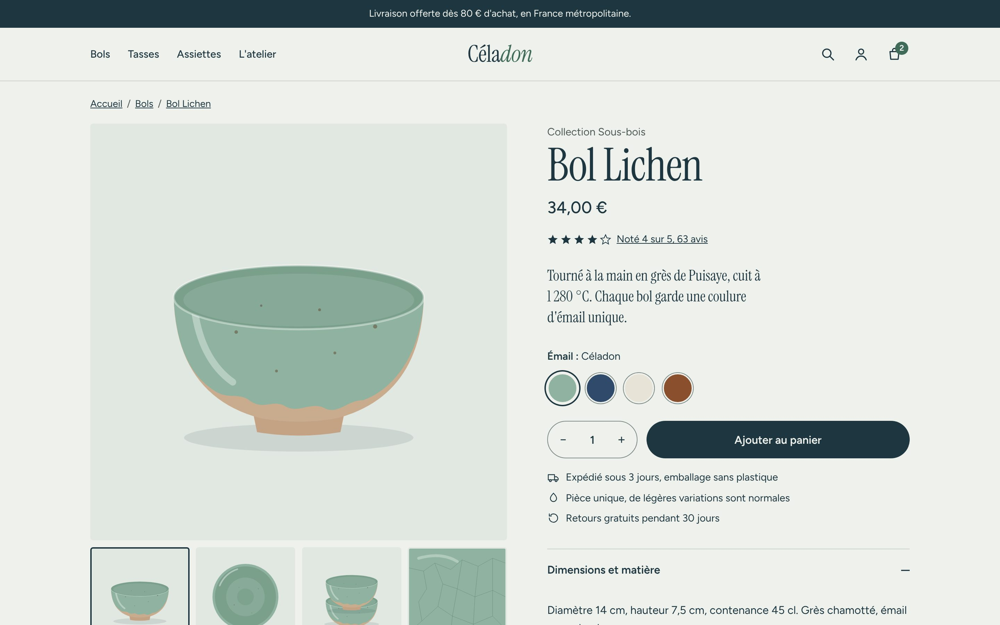
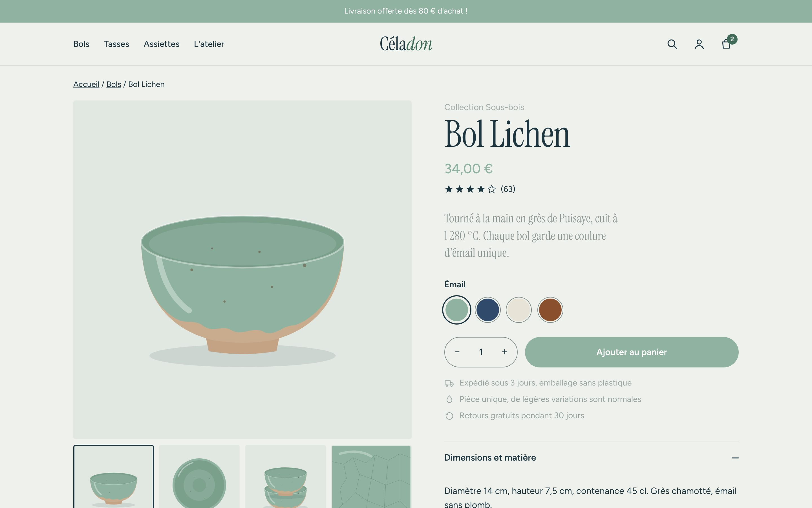
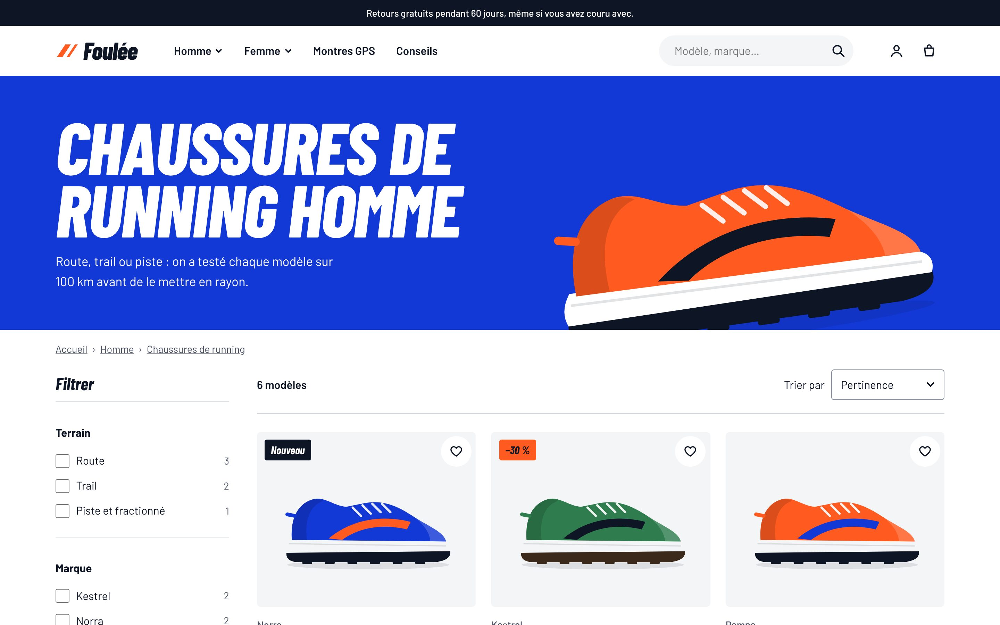
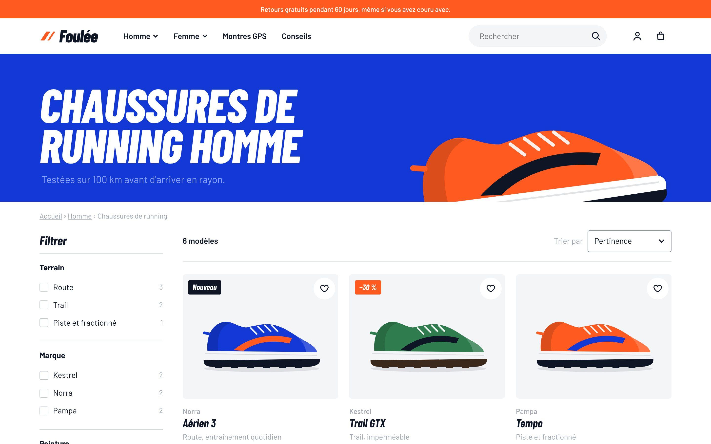
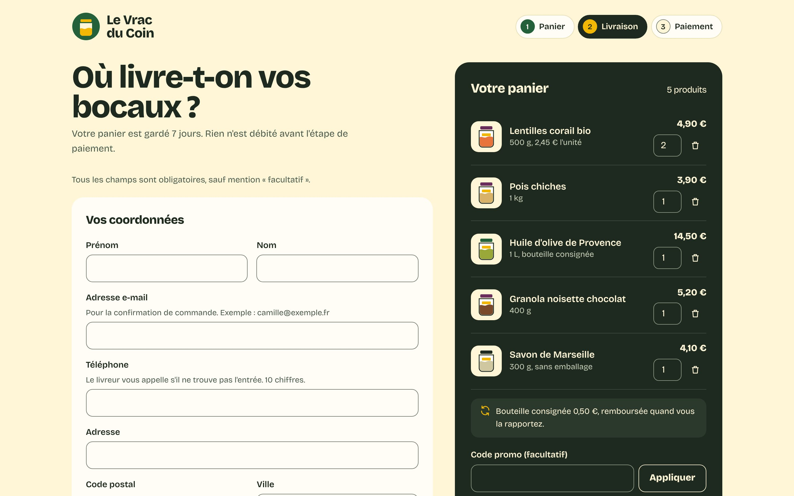
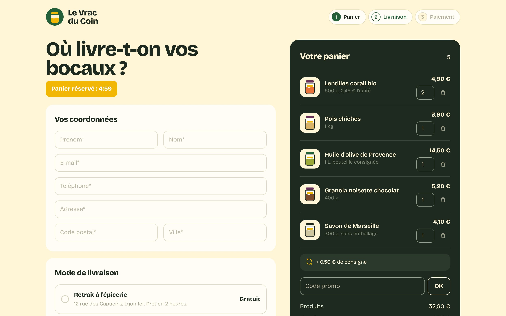

Même boutique. Sans les marches.
Trois boutiques en ligne inventées, chacune avec les défauts qu'on retrouve sur la plupart des sites marchands français. Puis la même page, refaite par Rampe.
Boutiques, marques et produits fictifs, créés pour la démonstration. Les défauts, eux, sont tirés de vrais sites.
31
problèmes corrigés sur 3 pages clés : fiche produit, catégorie, commande.
219 → 0
erreurs relevées automatiquement par axe-core, avant puis après.
100/100
au score d'accessibilité Lighthouse sur les trois pages, contre 61 / 83 / 82 avant.
Céladon
Une jolie boutique d'atelier, du genre qu'on trouve par centaines sur Shopify. À l'œil, rien ne cloche. Au clavier ou au lecteur d'écran, on ne peut pas acheter le bol.


Ce que disent les tests
- Score Lighthouse accessibilité
- Avant : 61/100Après : 100/100
- Erreurs détectées par axe-core
- Avant : 75Après : 0
- Commandes impossibles au clavier
- Avant : 20Après : 0
- Arrêts au clavier sans focus visible
- Avant : 24 sur 24Après : 0 sur 42
11 problèmes corrigés 2 bloquants, 6 majeurs, 3 mineurs
-
Bloquant
Le bouton « Ajouter au panier » n'est pas un bouton
Avant
C'est un bloc cliquable à la souris uniquement. Au clavier ou avec un lecteur d'écran, impossible d'acheter.
Après
Vrai bouton dans un formulaire. L'ajout est confirmé à voix haute : « 1 bol Lichen Céladon ajouté au panier ».
RGAA 7.1, 7.3, 7.5
-
Bloquant
Le choix de l'émail se fait par pastilles muettes
Avant
Quatre ronds de couleur sans nom, inatteignables au clavier. Un daltonien ou un aveugle ne sait pas ce qu'il choisit.
Après
Boutons radio natifs groupés sous « Émail », nom de la teinte écrit en toutes lettres à côté du titre.
RGAA 3.1, 7.1, 11.1
-
Majeur
Le carrousel défile tout seul toutes les 3 secondes
Avant
Pas de bouton pause : la photo change pendant qu'on la regarde ou qu'on la zoome.
Après
Plus de défilement automatique. Les vignettes sont des boutons qui disent « Photo 2 sur 4 : vue du dessus ».
RGAA 13.8
-
Majeur
Une pop-up promo s'ouvre au bout de 6 secondes
Avant
Le focus reste derrière, la croix n'est pas un bouton, Échap ne fait rien. Au clavier, la page devient inutilisable.
Après
Pop-up supprimée. L'offre passe dans la lettre d'information, en bas de page.
RGAA 7.1, 7.3
-
Majeur
Le focus clavier a été effacé
Avant
Le thème retire le contour de focus : on ne sait jamais où l'on est en naviguant au clavier.
Après
Anneau de focus de 3 px, contrasté sur chaque élément, y compris les pastilles d'émail.
RGAA 10.7
-
Majeur
25 textes trop pâles
Avant
Prix en vert céladon à 2,0:1, bandeau blanc sur céladon à 2,3:1, textes gris à 2,0:1. Le minimum légal est 4,5:1.
Après
Mêmes teintes, foncées juste assez : texte principal à 11,1:1, texte secondaire à 6,2:1.
RGAA 3.2
-
Majeur
Le zoom est bloqué sur mobile
Avant
La balise viewport interdit d'agrandir : les personnes malvoyantes ne peuvent pas lire les dimensions du bol.
Après
Zoom libre jusqu'à 200 % et au-delà, mise en page qui suit.
RGAA 10.4
-
Majeur
Icônes sans nom
Avant
Recherche, compte, panier, Instagram et Pinterest sont annoncés « lien » sans autre précision.
Après
Chaque icône a un intitulé : « Panier, 2 articles », « Céladon sur Instagram ».
RGAA 6.2
-
Mineur
Page sans langue, sans titre utile, sans structure
Avant
Pas d'attribut lang, titre d'onglet « Céladon », aucun h1, aucune zone (en-tête, contenu, pied).
Après
lang="fr", titre « Bol Lichen, grès émaillé céladon », h1, landmarks et lien d'évitement.
RGAA 8.3, 8.6, 9.1, 12.6, 12.7
-
Mineur
Formulaire de lettre d'info sans étiquette
Avant
Seul un texte gris « Votre e-mail » dans le champ, qui disparaît à la saisie.
Après
Étiquette visible, format attendu, autocomplétion, message d'erreur clair.
RGAA 11.1, 11.13
-
Mineur
Lien « cliquez ici » et aucune mention d'accessibilité
Avant
Le lien ne dit pas où il mène. Le pied de page n'indique pas l'état de conformité, pourtant obligatoire.
Après
« Découvrir l'atelier » et mention « Accessibilité : partiellement conforme » vers la déclaration.
RGAA 6.1
Foulée
Une page catégorie énergique, avec des filtres à la pointe de la mode. Sauf qu'ils ne fonctionnent qu'à la souris, et que la moitié des informations passent par la couleur.


Ce que disent les tests
- Score Lighthouse accessibilité
- Avant : 83/100Après : 100/100
- Erreurs détectées par axe-core
- Avant : 89Après : 0
- Commandes impossibles au clavier
- Avant : 33Après : 0
- Arrêts au clavier sans focus visible
- Avant : 13 sur 13Après : 0 sur 45
10 problèmes corrigés 3 bloquants, 5 majeurs, 2 mineurs
-
Bloquant
Les filtres ne marchent qu'à la souris
Avant
Terrain, marque, pointure et couleur sont des blocs cliquables : aucun n'est atteignable au clavier ni annoncé comme une case.
Après
Cases à cocher natives, groupées par fieldset avec un titre (« Terrain », « Pointure »…).
RGAA 7.1, 7.3, 11.5
-
Bloquant
Les produits ne sont pas des liens
Avant
La carte entière est cliquable en JavaScript, mais il n'existe aucun lien : au clavier, on ne peut ouvrir aucune chaussure.
Après
Le nom du modèle est un vrai lien, étendu à toute la carte pour la souris.
RGAA 7.1, 7.3
-
Bloquant
Le menu « Trier par » est un faux menu
Avant
Liste déroulante dessinée en div : impossible à ouvrir au clavier, rien n'est annoncé.
Après
Liste déroulante native avec son étiquette.
RGAA 7.1, 11.1
-
Majeur
Les sous-menus s'ouvrent seulement au survol
Avant
« Homme » et « Femme » cachent leurs rubriques à quiconque n'a pas de souris.
Après
Boutons qui s'ouvrent au clic, à Entrée ou Espace, et se ferment avec Échap.
RGAA 7.3, 10.13
-
Majeur
Le titre de la page est une image
Avant
« Chaussures de running homme » est dessiné dans le bandeau, sans texte alternatif ni h1.
Après
Vrai titre h1 en HTML, la chaussure devient une illustration décorative.
RGAA 1.1, 9.1
-
Majeur
Soldes et ruptures signalés uniquement par la couleur
Avant
Prix soldé en orange, ancien prix juste barré, pointures épuisées simplement plus pâles.
Après
« Prix soldé : 129,50 € au lieu de 185,00 € » lu à voix haute ; pointures épuisées barrées, en pointillés et annoncées « épuisée ».
RGAA 3.1
-
Majeur
31 textes trop pâles
Avant
Badges blancs sur orange à 3,1:1, gris clair à 2,4:1 sur blanc.
Après
Badges en encre sur orange à 5,8:1, gris passé à 7,8:1.
RGAA 3.2
-
Majeur
Le nombre de résultats change en silence
Avant
Après un filtre, la liste se met à jour mais un lecteur d'écran n'en sait rien.
Après
Zone de statut : « 2 modèles » est annoncé à chaque changement, avec un message si rien ne correspond.
RGAA 7.5
-
Mineur
La page se déclare en anglais
Avant
lang="en" sur une page française : le lecteur d'écran lit tout avec l'accent anglais.
Après
lang="fr" et titre d'onglet « Chaussures de running homme : 6 modèles – Foulée ».
RGAA 8.4, 8.6
-
Mineur
Pointures et favoris trop petits ou muets
Avant
Pastilles de pointure de 30 px, cœurs « favori » sans nom ni état.
Après
Cibles de 44 px, bouton « Ajouter Aérien 3 aux favoris » qui annonce s'il est activé.
WCAG 2.5.8, RGAA 7.1
Le Vrac du Coin
Le moment où l'on perd le plus de ventes. Un chrono qui vide le panier, un CAPTCHA illisible, des erreurs en rouge pâle : beaucoup de clients s'arrêtent ici, handicapés ou non.


Ce que disent les tests
- Score Lighthouse accessibilité
- Avant : 82/100Après : 100/100
- Erreurs détectées par axe-core
- Avant : 55Après : 0
- Commandes impossibles au clavier
- Avant : 10Après : 0
- Arrêts au clavier sans focus visible
- Avant : 19 sur 19Après : 0 sur 27
10 problèmes corrigés 3 bloquants, 6 majeurs, 1 mineurs
-
Bloquant
Le bouton « Continuer » n'est pas un bouton
Avant
Au clavier, impossible de valider la commande. Le paiement est hors d'atteinte.
Après
« Continuer vers le paiement » est un vrai bouton d'envoi de formulaire.
RGAA 7.1, 7.3
-
Bloquant
Un compte à rebours vide le panier en 5 minutes
Avant
Aucun avertissement, aucun moyen de prolonger. Avec un lecteur d'écran ou une main qui tremble, 5 minutes ne suffisent pas.
Après
Panier gardé 7 jours, sans chrono.
RGAA 13.1
-
Bloquant
Un CAPTCHA image sans alternative
Avant
Un code déformé à recopier, sans version audio ni autre moyen : bloquant pour les personnes aveugles ou malvoyantes.
Après
CAPTCHA supprimé, remplacé par une protection invisible côté serveur.
RGAA 1.4, 1.5
-
Majeur
Champs sans étiquette
Avant
Seul le texte gris dans le champ indique quoi saisir, et il disparaît dès la première lettre.
Après
Étiquettes visibles au-dessus des champs, indications (« 10 chiffres », exemple d'e-mail) reliées au champ.
RGAA 11.1, 11.2
-
Majeur
Erreurs signalées par une bordure rose pâle
Avant
Un « Erreur dans le formulaire » vague et des bordures rosées : on ne sait ni quel champ ni pourquoi.
Après
Résumé des erreurs qui prend le focus, avec des liens vers chaque champ, et un message précis sous chaque champ (« Le code postal doit comporter 5 chiffres, par exemple 69001 »).
RGAA 3.1, 11.10, 11.11
-
Majeur
Pas d'autocomplétion
Avant
Il faut tout retaper. Pénible pour tous, épuisant pour les personnes ayant des troubles moteurs ou cognitifs.
Après
Chaque champ déclare sa finalité (prénom, e-mail, code postal…) : le navigateur remplit tout.
RGAA 11.13
-
Majeur
Modes de livraison et étapes en faux contrôles
Avant
Les trois modes de livraison sont des blocs cliquables, l'étape en cours n'est signalée que par la couleur.
Après
Boutons radio natifs dans un groupe titré, étape annoncée « étape en cours ».
RGAA 3.1, 7.1, 11.5
-
Majeur
Panier aux commandes muettes
Avant
Poubelles sans nom ni accès clavier, quantités sans étiquette.
Après
« Retirer les pois chiches du panier », « Quantité de pois chiches ».
RGAA 7.1, 11.1
-
Majeur
16 textes trop pâles
Avant
Bouton vert clair à 2,1:1, chrono blanc sur jaune à 1,8:1, bords de champs à 1,4:1.
Après
Bouton à 7,3:1, bords de champs à 4,4:1, textes secondaires à 6,8:1.
RGAA 3.2, 3.3
-
Mineur
Titre « Checkout » et lien « ici »
Avant
L'onglet ne dit ni l'étape ni la boutique, le lien des CGV ne dit pas où il va.
Après
« Étape 2 sur 3, livraison – Commande – Le Vrac du Coin », lien « lire les CGV ».
RGAA 6.1, 8.6
Comment on a mesuré
Chaque page a été testée dans un vrai navigateur, avant et après correction, avec le même protocole :
- axe-core (le moteur utilisé par la plupart des outils d'audit) sur les règles WCAG 2.2 niveaux A et AA ;
- Lighthouse, l'outil de Google intégré à Chrome, catégorie accessibilité ;
- un parcours au clavier automatisé : chaque élément cliquable est-il atteignable avec Tab, et voit-on où l'on est ?
- une revue manuelle selon le RGAA 4.1, le référentiel officiel français : c'est elle qui trouve le chrono, le CAPTCHA ou les soldes signalés par la seule couleur, que les robots ne voient pas.
Les tests automatiques ne détectent qu'environ un tiers des problèmes. Un score de 100 ne prouve pas la conformité : c'est pour ça que les versions « après » affichent « partiellement conforme » tant qu'un audit RGAA complet n'a pas été mené.
Démonstration réalisée par Rampe. Code source, rapports d'audit et captures dans le dossier demos du dépôt.